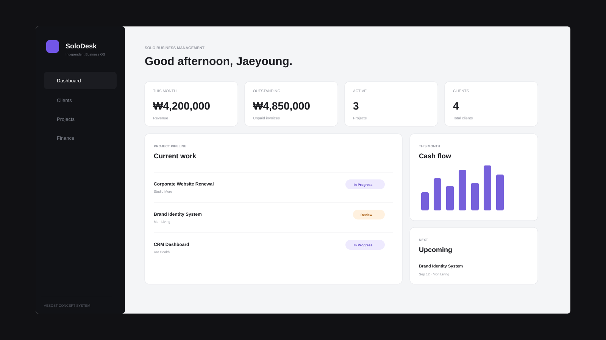

고객 정보가 흩어질 때
연락처와 진행 프로젝트, 거래 금액을 고객 단위로 모아 확인합니다.
SYSTEM SOLUTION 01 / SOLO BUSINESS
고객, 프로젝트, 일정과 정산이 여기저기 흩어지기 쉬운 1인사업자를 위해 설계한 업무 관리 시스템입니다. 화면을 먼저 이해한 뒤 마지막에 전체 데모를 직접 다뤄볼 수 있습니다.

WHY SOLODESK
고객 연락처는 메신저에, 프로젝트 일정은 캘린더에, 입금 여부는 엑셀에 따로 두면 일이 늘어날수록 확인해야 할 곳도 많아집니다. SoloDesk는 1인사업자가 자주 확인하는 정보를 한 화면 흐름으로 묶는 것을 목표로 합니다.
연락처와 진행 프로젝트, 거래 금액을 고객 단위로 모아 확인합니다.
진행중·검토·완료 단계를 구분하고 마감일과 금액을 함께 관리합니다.
청구 금액과 입금·미수 상태를 프로젝트 데이터와 연결해 확인합니다.
SCREEN GUIDE
왼쪽 메뉴를 누르면 실제 SoloDesk 데모의 해당 화면으로 미리보기가 바뀝니다. 이 단계에서는 구조를 이해하고, 마지막에 전체 화면 데모에서 직접 추가·검색·상태변경까지 체험할 수 있습니다.
이번 달 매출, 미수금, 진행 중 프로젝트와 다가오는 일정을 한 화면에서 확인합니다.
WORKFLOW
SoloDesk의 데모는 복잡한 기능을 많이 보여주기보다, 실제 1인사업자가 반복해서 사용하는 기본 업무 흐름을 직접 체험하는 데 초점을 맞췄습니다.
회사명, 이메일, 연락처를 등록해 고객 데이터베이스를 만듭니다.
고객과 금액, 마감일, 진행 상태를 연결해 프로젝트를 등록합니다.
In Progress → Review → Complete 단계로 상태를 변경합니다.
프로젝트 금액과 청구·입금 상태를 Finance 화면에서 확인합니다.
FULL INTERACTIVE DEMO
전체 화면 데모에서는 고객 추가, 프로젝트 추가, 검색, 필터, 프로젝트 상태 변경, 정산 현황 확인을 직접 사용할 수 있습니다. 입력한 데모 데이터는 현재 브라우저에만 임시 저장됩니다.
CUSTOM SYSTEM
SoloDesk와 완전히 같은 형태가 아니어도 됩니다. 현재 관리하고 있는 고객, 프로젝트, 파일, 계약, 정산 흐름을 기준으로 필요한 화면부터 함께 정리합니다.